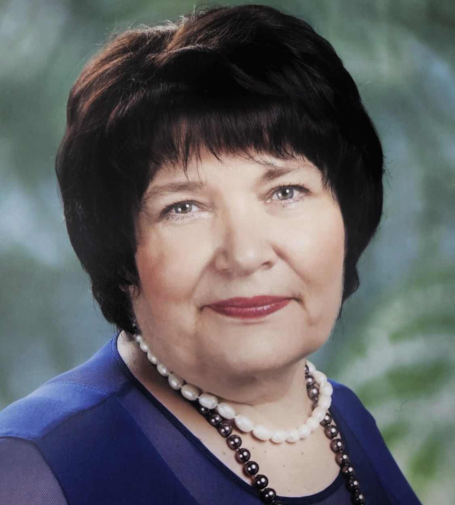

"Jo vairāk mēs priecāsimies par procesu, ko darām, jo labāki būs rezultāti."
Siguldas pilsētas vidusskolā strādā kopš skolas dibināšanas.
Intervētāja Laine Mūza
Cik gadus jūs strādājat Siguldas pilsētas vidusskolā?
Siguldas pilsētas vidusskolā strādāju kopš pašas skolas dibināšanas pirmās dienas. Ar šo skolu mani saista ļoti cieša saikne, jo arī pati esmu Siguldas skolas absolvente.
Kādus priekšmetus jūs mācāt?
Es mācu latviešu valodu un matemātiku 1.- 3. klasēs. Darbs ar jaunākajiem skolēniem ir ļoti radošs un dinamiskas enerģijas pilns.
Kas jūs iedvesmoja kļūt par skolotāju?
"Lielu pateicību par profesijas izvēli esmu parādā saviem skolotājiem.". Īpaši mani iedvesmoja skolotāja Daina Štāla. Skolas vide un skolotāji bija galvenais iemesls, kāpēc izvēlējos šo profesiju.
Kāpēc izvēlējāties strādāt tieši šajā skolā?
Šī skola man vienmēr ir bijusi īpaša. Tā ir vieta, kur pati mācījos, augu un attīstījos. Tāpēc bija ļoti dabiski atgriezties šeit jau kā skolotājai.
Kā jūs raksturotu savu darba pieredzi šeit?
Mana darba pieredze ir ļoti bagāta un piepildīta ar dažādiem notikumiem. Ikdiena skolā nozīmē aktīvu darbošanos kopā ar bērniem, nepārtrauktu kustību un jaunu ideju realizēšanu.
Kas jums visvairāk patīk darbā skolā?
"Tā ir saskarsme un attiecību veidošana, kopā būšana, kas balstīta uz sadarbību." Tieši cilvēki, bērni un kopības sajūta padara šo darbu īpašu.
Kas jūs motivē turpināt šo darbu?
Mani motivē bērni, jaunieši un kolēģi. "Mani motivatori ir bērni, jaunieši un kolēģi." Katru dienu iespējams iemācīties ko jaunu arī pašai.
Kā jūs raksturotu skolas vidi un atmosfēru?
Skolas vide ir enerģiska un radoša. Protams, ikdiena reizēm ir saspringta, jo visi tiecas uz labiem rezultātiem, taču svarīgi ir baudīt pašu procesu.
Kā jūs raksturotu skolotāju kolektīvu?
"Skolotāju kolektīvs ir ļoti 'raibs', un tas nozīmē — ļoti jauks." Mūsu kolektīvā ir gan jauni, gan pieredzējuši skolotāji, un šī dažādība rada jaunas idejas.
Vai jums ir laba sadarbība ar kolēģiem?
Jā, sadarbība ir ļoti svarīga. "Ir labi, ka mēs sarunās varam būt godīgi un neapvainoties." Savstarpēja sapratne palīdz radīt pozitīvu darba vidi.
Kādi skolas pasākumi jums visvairāk patīk?
Man ļoti patīk Žetonu vakari, koru kari, sporta pasākumi un dažādi draudzības pasākumi mazākajiem skolēniem. Šie notikumi stiprina kopības sajūtu skolā.
Kādu padomu jūs dotu skolēniem, kuri grib kļūt par skolotāju?
Lai kļūtu par skolotāju, jābūt pacietīgam, jāmāk klausīties un vienmēr jācenšas apgūt ko jaunu. Skolotāja profesija nozīmē nepārtrauktu attīstību.
Kādi notikumi skolā jums palikuši īpaši atmiņā?
Īpaši atmiņā palikuši skolotāju kopīgie braucieni un skolēnu sasniegumi, piemēram, deju kolektīva “Vizbulīte” koncerti un dažādi skolas pasākumi.
Kā jūs raksturotu mūsu skolas skolēnus kopumā?
"Mūsu skolēni ir neatlaidīgi, uzņēmīgi un drosmīgi." Katrs bērns ir atšķirīgs, un tas arī padara darbu interesantu.
Vai skolēni gadu laikā ir mainījušies attieksmes ziņā?
Jā, katra paaudze ir citāda. Mūsdienu bērni ilgāk izbauda bērnību un biežāk mācās caur spēli. Tas ir gan izaicinājums, gan iespēja skolotājam.
Kā notiek sadarbība ar skolēnu vecākiem?
Sadarbība ar vecākiem ir ļoti svarīga. Mēs cenšamies sadarboties, ieklausīties un kopīgi palīdzēt bērnam attīstīties.
Kas šajā sadarbībā ir vissvarīgākais?
"Mūsu uzdevums ir ieklausīties un darboties kopā skolēna interesēs." Savstarpēja uzticēšanās un cieņa ir pats svarīgākais.
Kā jūs redzat skolas nākotni?
Es ar optimismu raugos uz nākotni. "Mums būs skaista skola ar radošiem skolotājiem un darbīgiem skolēniem."
Ko jūs novēlētu nākamajām skolēnu paaudzēm?
Novēlu saglabāt cieņu pret savu skolu, būt neatlaidīgiem un vienmēr tiekties uz izaugsmi. "Turēt godu un cieņu par savu skolu, augt un attīstīties, lai sasniegtu savus sapņus."
SĀKUMS